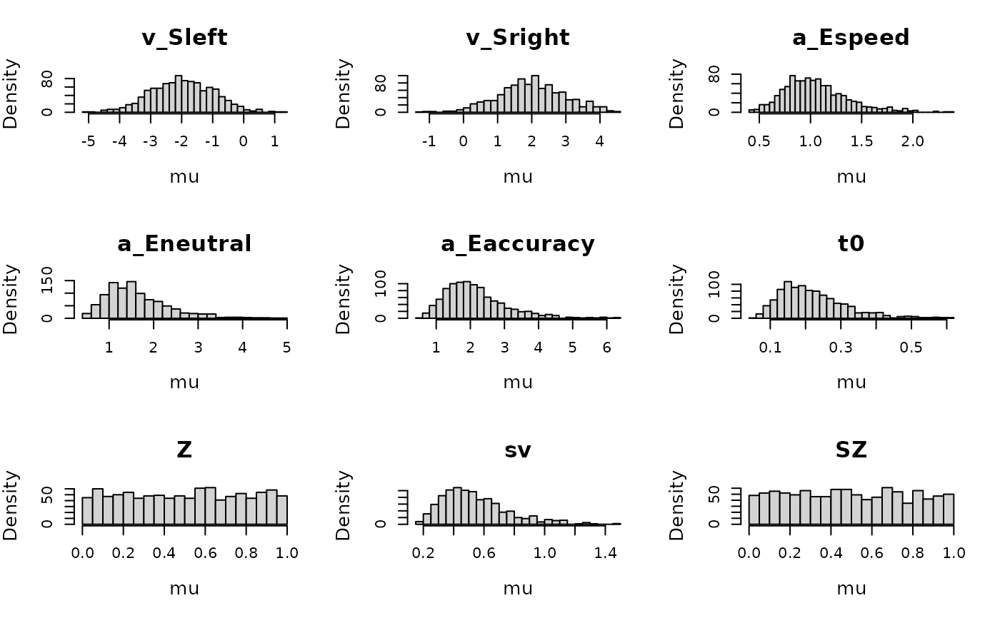
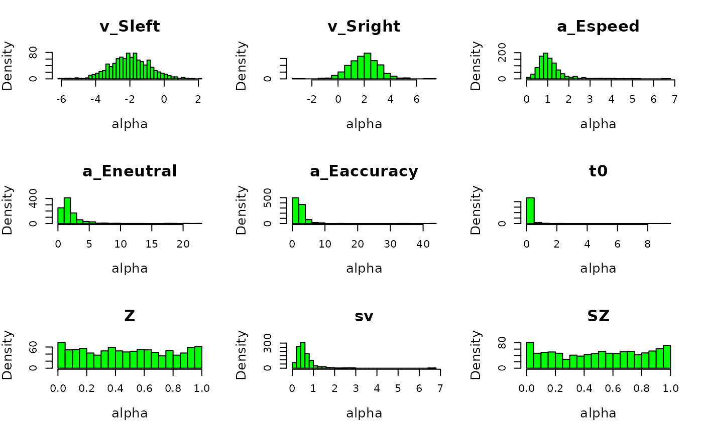
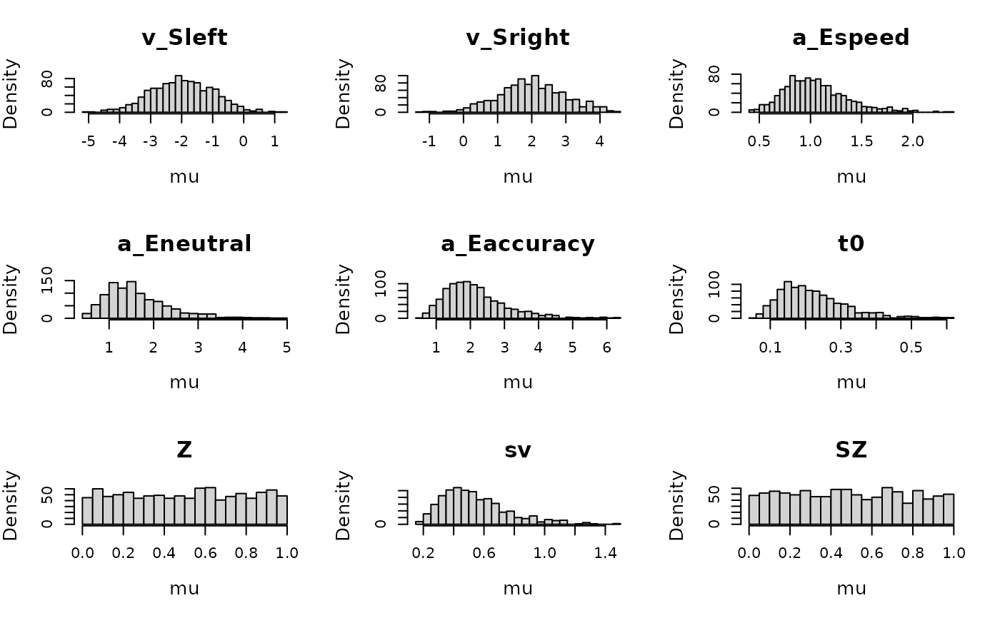
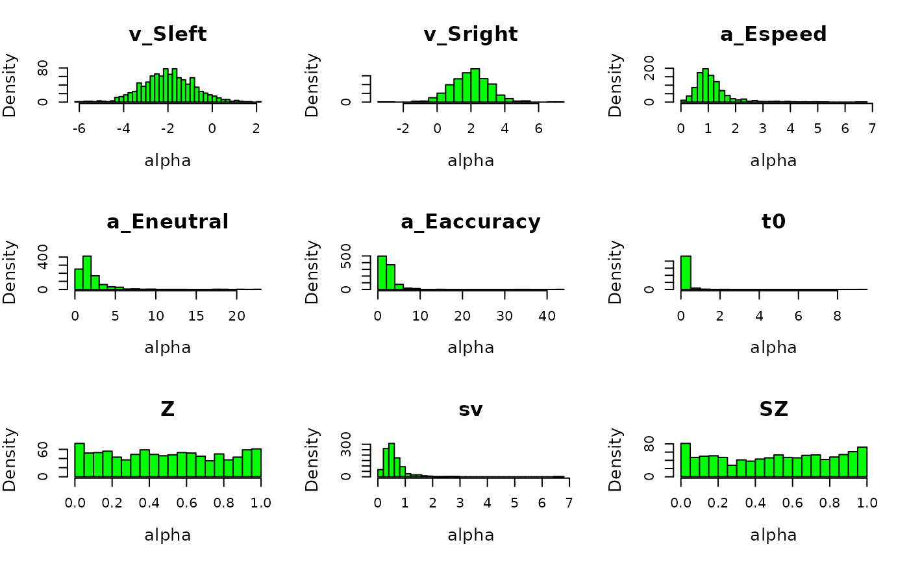

Title
Usage
plot_prior(
prior,
design,
selection = "mu",
do_plot = TRUE,
covariates = NULL,
layout = NA,
N = 50000,
...
)Arguments
- prior
A prior list created with
prior- design
A design list created with
design- selection
A Character string. Indicates which parameter type to use (e.g.,
alpha,mu,sigma2,correlation).- do_plot
Boolean. If
FALSEwill only return prior samples and omit plotting.- covariates
dataframe/functions as specified by the design
- layout
A vector indicating which layout to use as in par(mfrow = layout). If NA, will automatically generate an appropriate layout.
- N
Integer. How many prior samples to draw
- ...
Optional arguments that can be passed to get_pars, histogram, plot.default (see par()), or arguments required for the types of models e.g. n_factors for type = "factor"
Examples
# \donttest{
# First define a design for the model
design_DDMaE <- design(data = forstmann,model=DDM,
formula =list(v~0+S,a~E, t0~1, s~1, Z~1, sv~1, SZ~1),
constants=c(s=log(1)))
#> Parameter(s) st0 not specified in formula and assumed constant.
#>
#> Sampled Parameters:
#> [1] "v_Sleft" "v_Sright" "a" "a_Eneutral" "a_Eaccuracy"
#> [6] "t0" "Z" "sv" "SZ"
#>
#> Design Matrices:
#> $v
#> S v_Sleft v_Sright
#> left 1 0
#> right 0 1
#>
#> $a
#> E a a_Eneutral a_Eaccuracy
#> speed 1 0 0
#> neutral 1 1 0
#> accuracy 1 0 1
#>
#> $t0
#> t0
#> 1
#>
#> $s
#> s
#> 1
#>
#> $Z
#> Z
#> 1
#>
#> $sv
#> sv
#> 1
#>
#> $SZ
#> SZ
#> 1
#>
#> $st0
#> st0
#> 1
#>
# Then set up a prior using make_prior
p_vector=c(v_Sleft=-2,v_Sright=2,a=log(1),a_Eneutral=log(1.5),a_Eaccuracy=log(2),
t0=log(.2),Z=qnorm(.5),sv=log(.5),SZ=qnorm(.5))
psd <- c(v_Sleft=1,v_Sright=1,a=.3,a_Eneutral=.3,a_Eaccuracy=.3,
t0=.4,Z=1,sv=.4,SZ=1)
# Here we left the variance prior at default
prior_DDMaE <- prior(design_DDMaE,mu_mean=p_vector,mu_sd=psd)
# Now we can plot all sorts of (implied) priors
plot_prior(prior_DDMaE, design_DDMaE, selection = "mu", N = 1e3)
 plot_prior(prior_DDMaE, design_DDMaE, selection = "mu", mapped = FALSE, N=1e3)

# We can also plot the implied prior on the participant level effects.
plot_prior(prior_DDMaE, design_DDMaE, selection = "alpha", col = "green", N = 1e3)

# }
plot_prior(prior_DDMaE, design_DDMaE, selection = "mu", mapped = FALSE, N=1e3)

# We can also plot the implied prior on the participant level effects.
plot_prior(prior_DDMaE, design_DDMaE, selection = "alpha", col = "green", N = 1e3)

# }